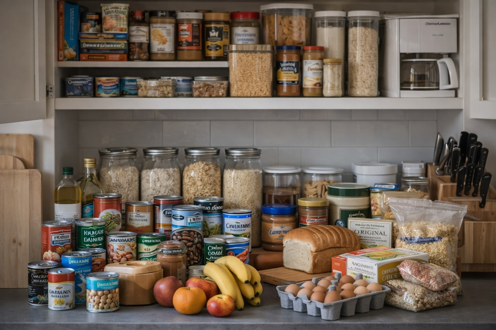

Food — Foundations
Last updated: 2025-12-30 · 9 min read

- Build a baseline using foods you already eat (rotation is the real superpower).
- Plan meals, not items: calories + protein + fats + morale.
- Short-term overlap with normal life beats “special emergency food.”
- A simple labeling system prevents waste and stress.
Purpose: Build a calm, usable food baseline that covers calories, nutrition, and morale—without turning your pantry into a bunker.
Think in meals, not items
Most people overestimate their food security because they count items instead of meals. A shelf of cans may only represent a few days of complete meals.
- Ask: “How many full meals can we eat?”
- Account for breakfast, lunch, and dinner
- Include cooking fuel and water
Planning by complete meals prevents gaps (e.g., calories without protein, or food without fuel/water).
- Pick 7–10 repeatable ‘base meals’ your household actually eats.
- For each meal, list: main + side + seasoning + cooking method + required water.
- Store the ‘meal kit’ together (bin/bag) so it’s grab-and-go under stress.
Calorie baseline
A simple baseline is 2,000 calories per adult per day. Adjust upward for physical work or cold environments.
- Children and elderly often need fewer calories
- Stress and cold increase energy demand
Use a conservative baseline so your plan works even during higher activity or cold weather.
- Start with ~2,000 kcal/adult/day (adjust for body size/activity); add 10–20% buffer.
- Track one normal day of eating and translate it to shelf-stable equivalents.
- Prioritize calorie-dense staples: rice, pasta, oats, beans, nut butters, oils.
Short-term layer (0–30 days)
- Canned meals, soups, beans, tuna
- Comfort foods and snacks for morale
- Fresh foods with longer shelf life (potatoes, onions, squash)
This layer should overlap heavily with what you already eat.
Short-term is about continuity and convenience—minimize disruption while supply chains are uncertain.
- Keep ‘no-cook’ options: canned meals, ready protein, crackers, electrolyte packets.
- Buy a little extra of what you already use each week (quietly builds a buffer).
- Include comfort items (tea/coffee, spices, small sweets) to reduce decision fatigue.
Medium-term layer (1–12 months)
- Dry staples: rice, oats, lentils, pasta
- Powders: milk, eggs, protein
- Oils and fats (rotate frequently)
Medium-term is where rotation and storage discipline matter most.
- Build around staples + proteins + fats + flavor (spices/sauces).
- Use FIFO rotation: newest to the back; cook from the front weekly.
- Add one ‘specialty’ item per month (powdered milk, dehydrated veg, etc.).
Rotation and storage
- First-in, first-out rotation
- Cool, dark, dry storage
- Clear labeling with purchase dates
Rotation is the difference between a pantry and a plan.
- Label bins with month/year; set a quarterly rotation reminder.
- Store cool/dry/dark; avoid garages for heat-sensitive items (oils, vitamins).
- Keep pest protection: sealed containers + bay leaves + inspection routine.
Nutrition and morale
Calories alone are not enough. Nutrition and morale affect decision-making.
- Protein sources at every layer
- Fats for satiety and energy
- Spices, coffee, tea, or treats
Nutrition keeps you functioning; morale keeps you executing the plan.
- Aim for: protein daily, fiber daily, and some micronutrient coverage (veg/fruit).
- Stock flavor: salt, pepper, garlic, hot sauce, curry, soy sauce, bouillon.
- Plan a weekly ‘treat meal’ from stored items—routine reduces stress.
Protein planning
Protein shortages impact strength and cognition faster than calorie shortages.
Protein is the hardest macro to maintain; plan it explicitly.
- Mix sources: canned fish/chicken, beans/lentils, powdered eggs, protein powders.
- Target 60–100g/day/adult depending on size and training; adjust as needed.
- Pair beans with rice/oats to improve amino acid profile.
Shelf life reality
Storage conditions matter more than printed expiration dates.
Dates are guidelines; storage conditions are the real determinant.
- Oils go rancid fastest—buy smaller bottles and rotate often.
- White rice stores longer than brown; whole grains store shorter.
- Inspect monthly: bulging cans, off smells, moisture, pests.
Storage geometry
Food should be visually scannable in seconds.
A simple baseline you can actually use
A good baseline is one you can cook, rotate, and enjoy. The goal is to cover calories, protein, and fats with foods that match your routine.
- Pick 10–15 “default meals” your household already likes.
- Stock ingredients for those meals in 2–4 week quantities.
- Add a small “no-cook” buffer for stressful days.
- Buying foods you never eat (they won’t rotate).
- Over-optimizing brands or “perfect macros.”
- Relying on one staple (e.g., rice-only) without protein/fat.
The three pillars: calories, protein, fats
If you only remember one thing: calories keep you moving, protein keeps you strong, and fats keep you satisfied.
- Protein: canned meats, beans/lentils, powdered protein, nut butters
- Fats: olive oil, ghee, coconut oil, nut butters (rotate frequently)
- Carbs: rice, oats, pasta, potatoes, flour
Rotation system that takes 2 minutes
Rotation doesn’t need spreadsheets. Use a simple rule: new items go behind old items, and the oldest items get used first.
- Write purchase month/year on the top with a marker.
- Keep “open now” bins for week-to-week cooking.
- Keep “reserve” bins for your 30–90 day layer.
Morale foods are not optional
During stress, appetite and mood shift. A small set of morale foods can prevent bad decisions and conflict.
- Coffee/tea, chocolate, spices, hot sauce, comfort snacks
- Simple desserts (instant pudding, baking mixes)
- “Special meal” ingredients for weekends
A quick starter checklist
- 7 days: default meals + snacks + breakfast
- 30 days: staples + protein + fats + morale foods
- 90 days: expanded rotation and cooking flexibility
Good storage prevents waste and makes weekly rotation easy.
- Use clear bins by category: breakfasts, proteins, staples, snacks, spices.
- Keep a ‘top shelf’ for daily-use items and a ‘reserve shelf’ for buffer.
- Write a simple inventory list (paper + phone note) and update monthly.
Next step
Once the baseline is stable, move to Food — Practical for longer disruptions and cooking constraints.
Educational content only.